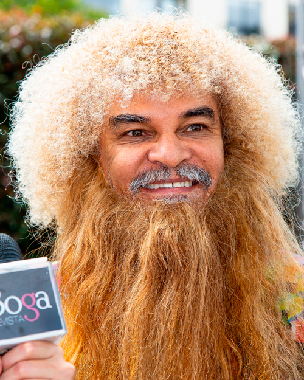

La Copa América
Por: Jerrika LozanoLa Copa América inspira los mejores looks de este 2019!
Para nadie es un secreto que la Copa América es uno de los eventos deportivos con más adeptos en el Continente y por estos días ya se encuentra en su recta final; en esta ocasión hablaremos sobre uno de los temas que se convierte en tendencia y es el look de los jugadores, pues lo caballeros que nos leen también son muy importantes para nosotros y queremos mostrarles los nuevos estilos en cortes masculinos inspirados en la fiesta del fútbol; y quien mejor para dar los mejores consejos, que uno de los estilistas colombianos más reconocidos en este campo, Norberto. La tendencia está en llevar un corte bajo en la parte inferior y largo en la superior, las tinturas en colores claros como beige, champan, dorado y cobre son los más pedidos; para aquellos que son más arriesgados los colores como el verde, azul, rojo y hasta los neones también son una gran opción, aunque no se preocupen si no quieren tinturar su cabello hay shampoos y sprays que funcionan muy bien, Norberto aconseja ser más modernos y arriesgados.
La barba no se queda atrás, pues aunque está en tendencia llevarla pulida, también para aquellos que desean arriesgarse hay muchas opciones a la hora de llevar bordados y figuras en ella. Un arte que hoy en día tiene gran acogida entre los caballeros.
-
Carlos “El Pibe Valderrama”
- Faustino Asprilla “El tino”
-
Víctor Hugo Aristizábal
-
Óscar Córdoba
Por último quisimos recordar los mejores looks de futbolistas quienes no tuvieron miedo al qué dirán y se arriesgaron logrando marcar tendencia.